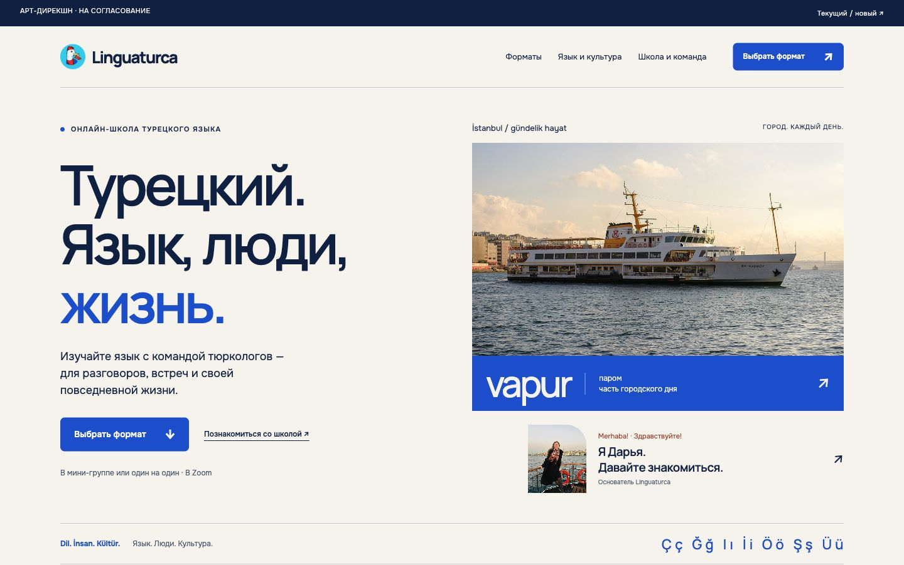
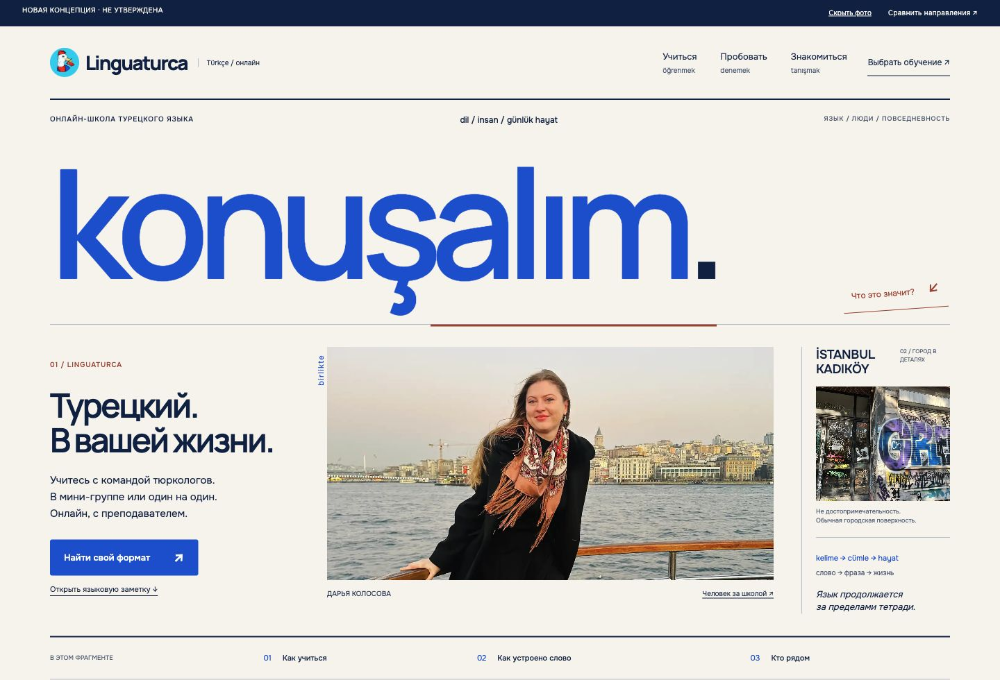

LINGUATURCA / НОВАЯ АРТ-ДИРЕКШН ИТЕРАЦИЯ / НЕ УТВЕРЖДЕНА
Язык на полях жизни.
Слева — Bosphorus Blue. Справа — новый фрагмент: слово как обложка, двуязычный каталог, разбор слова и editorial-профиль Дарьи. Сравниваем направление, а не готовый сайт.

Обложка вместо баннера. Konuşalım задаёт масштаб разворота; русский смысл школы и выбор обучения видны рядом с человеком, городом и языковой пометкой.
Турецкий формирует систему. Двуязычные рубрики, целое слово и его части, контекст по нажатию. При замене языка нужно менять композиционные единицы и взаимодействие, а не только фото.
Контент пока открыт. Нужны настоящие заметки преподавателя, голос Дарьи и документальная серия школы. Посмотреть без фотографий ↗
Справа: фасад Моды — Turkish delight2, CC BY 4.0. Слева: паром — Tarik Kaan Muslu, CC BY-SA 4.0. Фото кадрированы при показе; кадрированные воспроизведения парома сохраняют CC BY-SA 4.0. Портрет и рисунок — материалы текущего сайта. Описание, источники и материалы для следующего этапа.